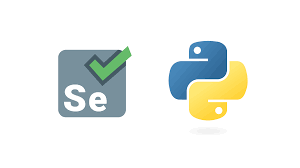
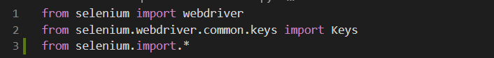
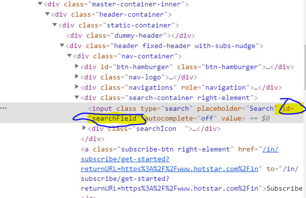
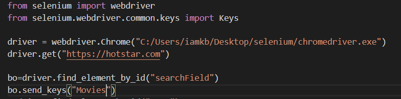

Selenium
If you ask a lazy programmer which is his favorite programming language, there is a high probability that you will get “Python” as an answer. Python is considered as one of the most popular and in-demand programming languages. As you all might be aware, Selenium is the perfect tool for Automation Testing of a web application. Hence, Python helps us to write the Selenium scripts in a much simpler way when compared to other programming languages.
Introduction to Selenium!!
Selenium is an open source tool which is used for automating the test cases carried out on web browsers or the web applications that are being tested using any web browser. Wait, before you get carried away, let me re-iterate that, only testing of web applications is possible with Selenium. We can neither test any desktop software application nor test any mobile application using Selenium. So it’s an open source tool which supports cross browsing and automates web applications!
Now, in order to implement Python with Selenium, we first need to import Selenium web driver!
First, let me tell you what is Selenium web driver.
WebDriver in Selenium is a web-based Automation Testing framework which can test web pages initiated on various web browsers and various operating systems. In order to import and configure dependencies to add libraries and functionalities, you need to import Selenium Webdriver with the help of below commands.
Locating Web Elements using Python
The locator is as an address that identifies a web element uniquely within the webpage. Locators are the HTML properties of a web element which tells Selenium about the element it needs to perform the action on. Selenium uses locators to interact with the web elements on the webpage.
Now, there is a diverse range of web elements like text box, id, radio button, etc and identifying these elements has always been a very tricky subject. Thus it requires an accurate and effective approach. Thereby, we can say that more effective the locator is, stabler will be the automation script. Every Selenium command requires locators to find web elements. Thus, to identify these web elements accurately and precisely, we have different types of locators, namely:
- ID
- name
- linkText
- CSS selector
- XPath
On inspecting the above web element, you can see it has an input tag and attributes like class and id. Now, I will use the value of Id locator i.e. search-field to locate the search box.
Let’s see how to automate the search box and send values to it using Id locator.
When you run the above code, chrome driver will launch Google Chrome, redirect to Hotstar, enter the value as ‘Movies’ in the search box.
likeWise we can use name,linkText,css selector,XPath with the help of these we can locate the web Elements by using python.Locators in Python